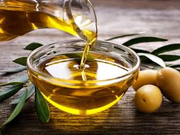

Página inicial
Artigos
Escolher um azeite no mercado pode ser desafiador, há muitas opções de garrafinhas verdes e de preço.
Entretanto, com as informações certas é possível escolher a melhor opção.
Confira as dicas abaixo:

Quando se trata de azeite, antes de olhar o valor se atente a lista de ingredientes. Muitas marcas mais
em conta entregam um produto tão bom quanto as famosas, e o contrário também acontece. Então,
antes de colocar qualquer garrafa no carrinho olhe o rótulo.
Sempre que possível, opte pelo azeite extravirgem, ele é o mais puro que existe. Por não ter refinamento
é o que mais preserva os nutrientes, pode ser utilizado em saladas, pães refogados e temperos.
Entretanto seu custo costuma ser mais elevado, e caso o orçamento esteja restrito, o azeite virgem
é uma alternativa, sua qualidade é menor, mas ainda é uma boa opção .
Já o azeite tipo único, é o
mais barato, mas com a qualidade mais inferior. Ele é uma mescla de azeite refinado com virgem ou
extravirgem.
Ele pode ser utilizado em alguns contextos, mas é crucial saber o que está sendo comprado.
A acidez do azeite diz muito sobre sua qualidade. Para ser extravirgem de fato, a acidez precisa ser de
até 0,8%, o virgem pode chegar a 2,0%.
Já o tipo único em até 1%, mas lembre-se que ele é uma mistura.
Portanto, caso em uma garrafa esteja escrito “extravirgem”, e a acidez for acima de 0,8%, o produto não
é o que se propõe.
Há muitos produtos que misturam azeite de oliva com outros óleos vegetais com o fim de baratear o custo
de produção. Geralmente, é armazenado em embalagens de plástico e o preço é baixo.
Portanto, se o rótulo não dizer claramente que é 100% azeite, desconfie.
Esse é um detalhe que poucas pessoas reparam: o azeite não pode ficar em contato com a luz e a umidade.
A exposição faz com que ele perca a qualidade mais rápido.
Devido a isso, evite os produtos posicionados
na frente das prateleiras e opte pelos localizados no fundo.
O vidro escuro é o material ideal para armazenar o azeite, ele o protege da oxidação e mantém os nutrientes
por mais tempo.
Embalagens transparentes ou de plástico tornam o produto mais vulnerável à luz e pode
comprometer sua qualidade.